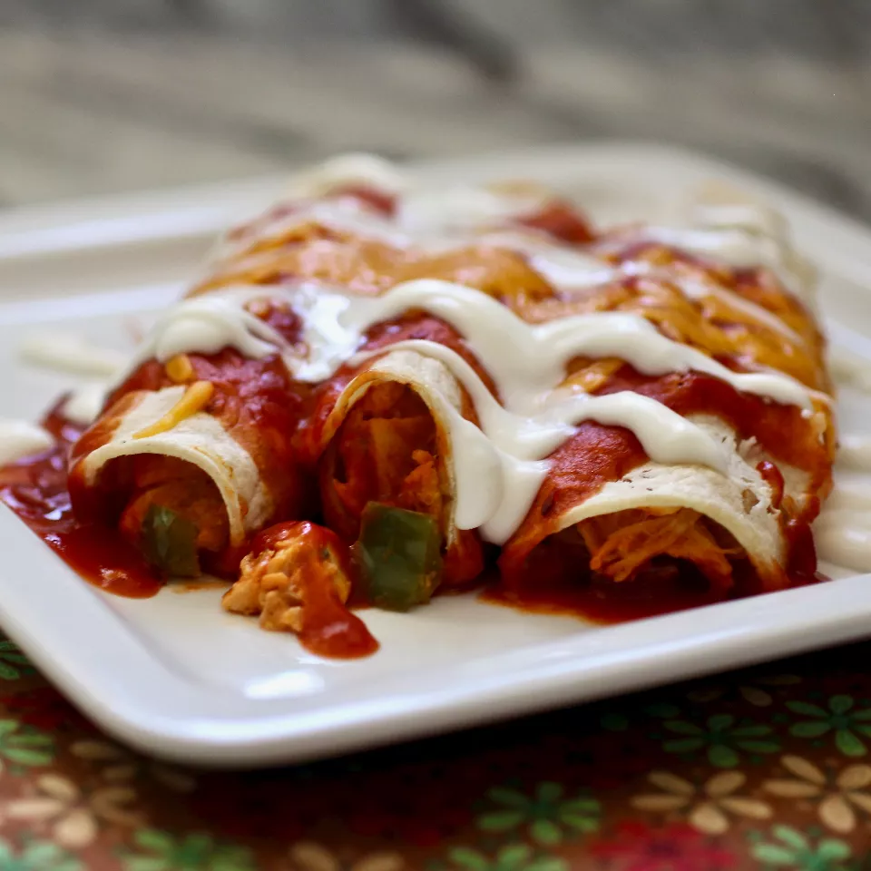

Chicken Enchiladas

Description
This is a recipe taken from AllRecipes.
Ingredients
- 1 Tbs Olive Oil
- 4 Skinless Chicken Breasts
- 1 Onion, Chopped
- 1 3/4 Cups Chedder Cheese, Shredded
- 1/2 Pint Sour Cream
- 1 Tbs Dried Parsley
- 1/2 tsp Dried Oregano
- 1/2 tsp Ground Black Pepper
- 1 (15 oz) Can of Tomato Sauce
- 1/3 Cup Chopped Green Bell Pepper
- 1 Clove Garlic, Minced
- 1 Tbs Chili Powder
- 8 (10 inch) Flour Tortillas
- 1 (12 oz) Jar Taco Sauce
Optional Items
- 1/2 tsp Salt
- 1/2 Cup Water
Instructions
- Prehead oven to 350 degrees F.
- Heat oil in a nonstick skillet over medium heat. Add chicken and cook until no longer pink, 5 to 7 minutes per side.
- Transfer chicken to a cutting board and cut into cubes. Return to skillet.
- Add onion, 1 cup cheese, sour cream, parsley, oregano, and black pepper. Cook and stir over low heat until cheese melts. Stir in tomato sauce, green pepper, garlic, chili powder, and salt. Add water as needed.
- Spoon chicken mixture into tortillas and roll into enchiladas. Arrange into a 9x13 inch baking dish. Top with taco sauce and remaining 3/4 cup cheese.
- Bake in preheated oven, uncovered, until cheese has melted, about 20 minutes.